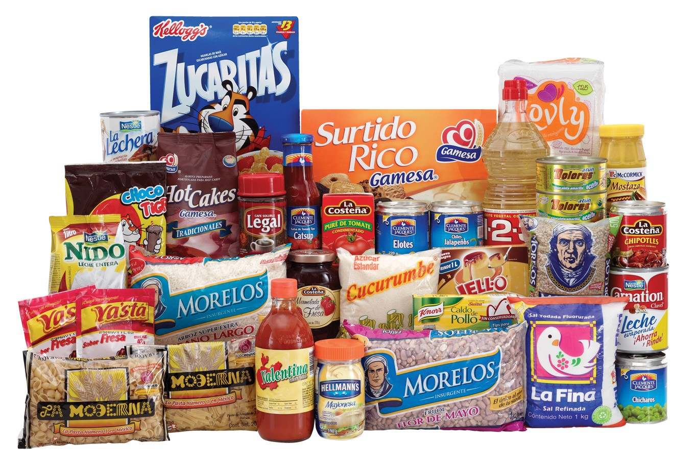

<!--
  Generated template for the ProductsPage page.

  See http://ionicframework.com/docs/components/#navigation for more info on
  Ionic pages and navigation.
-->
<ion-header>

  <ion-navbar>
    <ion-title class="accent-color">Productos</ion-title>
  </ion-navbar>

  <ion-searchbar (ionInput)="getItems($event)"></ion-searchbar>

</ion-header>


<ion-content>
  <div padding>
    <ion-segment [(ngModel)]="categories">
      <ion-segment-button value="groceries">
        Abarrotes
      </ion-segment-button>
      <ion-segment-button value="vegetables">
        Verduras
      </ion-segment-button>
    </ion-segment>
  </div>

  <div [ngSwitch]="categories">
    <ion-list *ngSwitchCase="'vegetables'">
      <ion-item>
        <ion-thumbnail item-start>
          
        </ion-thumbnail>
        <h2>Zanahoria</h2>
      </ion-item>
      ...
    </ion-list>

    <ion-list *ngSwitchCase="'groceries'">
      <ion-item>
        <ion-thumbnail item-start>
          
        </ion-thumbnail>
        <h2>Coca-cola</h2>
      </ion-item>
      <ion-item>
        <ion-thumbnail item-start>
          
        </ion-thumbnail>
        <h2>Coca-cola2</h2>
      </ion-item>
    </ion-list>
  </div>


  <!-- <ion-card>
  
  <ion-card-content>
      <ion-card-title>
        Frutas y verduras
      </ion-card-title>
      <p>
        Las verduras más frescas, directo a tu hogar.
      </p>
    </ion-card-content>
  </ion-card>

  <ion-card>
  
  <ion-card-content>
      <ion-card-title>
        Abarrotes
      </ion-card-title>
      <p>
        Todo lo que puedas necesitar en abarrotes para tu hogar.
      </p>
    </ion-card-content>
  </ion-card> -->

</ion-content>
